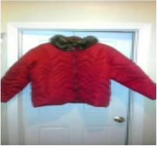

About Young Futures
Young Futures recognizes the potential of placing kids in a supportive environment that allows the minds to flourish! Young Futures is emerging in our Capital Region community with the intent to make a positive impact for those served, and generations that follow.
- 2007: The Beginning
-
At its start, Young Futures was created to give the community an additional resource. James Mitchell was working with families in his own community, providing childcare, mentorship, and social skills coaching.
James decided he wanted to provide educational and cultural experiences to more families, and a program that integrated the children and families was born:
- Families with total income under $48,000 and 2 or more dependents had the option of their children participating in an outing for entertaining, educational, or dining
- Families with an income of over $95,000 and 2 or fewer dependents had the option to allow their children to participate in social and educational outings
James Mitchell, as Young Futures, coordinated visits with the different families and took the children on outings that allowed them to observe a new environment that would help them grow. James took the kids to places like Mass MoCA, the Bronx Zoo, the Boston Aquarium, movies, Funplex, the park, and carnivals.
- 2012 - 2015: Coats
-
As New York State and the city of Albany prepared for Hurricane Sandy, James decided no matter how bad the community suffered that he would be allied to those that would lose resources. He started a coat drive for adults and as the city was hit by heavy winds, he passed out coats in his community. Driving around Delaware Ave., he met several people that were new to this country.
Throughout that winter, James developed a relationship with different organizations like Mission Accomplished Transition Services. While at A.C.A.P. he was also able to develop a partnership with S.N.U.G., then Albany Cure Violence. On Tuesday and Thursday from February to April, the community adults were able to pick up a gently worn winter coat. Young Futures was able to develop a relationship with S.N.U.G. and the South End Community Center, which allowed us to give out over 200 coats over the course of three winters in the Capital District.

- 2015: Professional Wear
-
As the new year began, Young Futures realized that there were not many places for young men and women to you get Professional Wear. During that season, we were able to give away dress shirts and belts to men that were already enrolled in career services programs. We targeted the young professional that wanted to have an alternative outfit if given a job or second interview. Thanks to a partnership with Mission Accomplished, we were able to provide them with over 30 gently used suits. This helped the Suit Drive build awareness, and different partnerships.
The effects of this program are still being seen in our community, either by seeing a coat given away years ago still in good condition, or bumping into an individual served in the community or workplace.On August 26th, 2018 we supported Mission Accomplished with its Satisfashion program
- 2016: Art Classes
-
In 2016 , we narrowed our attention to children, using a concept James’ nine-year-old daughter helped him develop. James purchased a pair of white canvas sneaker to wear with an outfit, but once the shoe became worn Leila asked to paint them. That very idea became Young Future’s first flagship program.
In July of 2016, Young Futures developed a relationship with the Albany Barn, and with their support we were able to invite over 25 children and families to come paint sneakers.
The Albany Barn was so pleased with the work and excitement they asked Young Futures to come back to co-facilitate an education art gallery called Summer in the City. We gave children bookbags that they painted and watched a documentary about growing up in the urban community. We had ice cream provided by Ben and Jerry’s.
Through the winter, Young Futures hosted small pop up art classes until the spring of 2017.


- 2017: More Programs
-
In February, Young Futures was contacted by Catholic Charities Church program Sunnyside Center in Troy NY. Sunnyside Center needed a weekly program that would engage not just the children they were serving but their parents as well. So we created our second flagship program call Art Evolution.
In Art Evolution, the children would create various types of arts and speak on camera about their experience. This program challenges the kids to create the rule that they would police. Over the course of two months, the children were able to make candles, make soap, and decorate a 12-inch cake using fondant and icing. At the end of the program, the same children that didn’t want to listen and participate the first week now wanted to know when we would be back!
In August, we facilitated an art competition using the concept of Art & Sole. We welcomed 18 of the Capital District’s hottest artists and asked them to design a pair of white canvas sneakers in two hours. The sneakers were judged and we announced the winner two weeks later where we also auctioned the sneakers, allowing us to pay the artist a percentage and raise funds for future children’s art programming.
Based on our previous relationship with the Barn, we all was able to come back to the table to discuss a partnership. Young Futures was asked to host a weekly class in Arbor Hill, which is still running today.

- 2018: Urban Art
-
This year’s programming focused on our weekly art class called Urban Art. The children made jelly soap, regular soap, candles, T-shirt pillows, custom marble coffee mugs, beaded bracelets, necklaces, sneakers, decorated cakes, and much much more.
We also facilitated another flagship program in February. We hosted our second annual Children Paint and Sip. This program welcomed 50 children and we offered chocolate and strawberry milk using almond milk and 2% milk. We also had organic and no-high-fructose-corn-syrup beverages for them. This class was guided by a local artist Julan Talyor.
We continue to use our community partnership and collaborated with Ben and Jerry’s to provide the children attending their shop free ice cream with a canvas that had an outline of an ice cream cone. On this day we gave away over 50 small canvases.
Then in August, we hosted our second annual Art & Sole Competition.